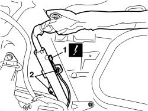
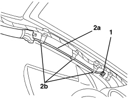
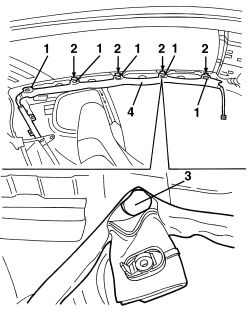
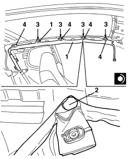
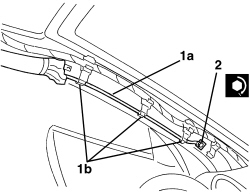
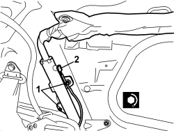

5580C52 WINDOW BAG MODULE (ONE) LH OR RH - R.R WITH INTERFERING PARTS REMOVED
- Path
- Procedures > 55 ELECTRICAL EQUIPMENT > 5580 SPECIAL ACCESSORIES > 5580C AIR BAG SYSTEM > 5580C52 WINDOW BAG MODULE (ONE) LH OR RH - R.R WITH INTERFERING PARTS REMOVED
- Kind
- repair procedure (removal / refitting; the operation number is the code)
- Applies to
- all engines; all production periods
- Interactive page
- https://sloeber94.github.io/elrnDB-aBrrSpdr/en/#/946002469
Applies to: all engines; all production periods
 Removing
Removing
 Refitting
Refitting- Extract the electronic key.
- Disconnect the battery leads and insulate them.
- Wait for 10 minutes before continuing.
- Lower the front seat backrests into the end of travel position.
Applies to: all engines; all production periods
1. Working from the rear of the vehicle, disconnect the electrical connection.
Description | Component |
|---|---|
PASSENGER SIDE WINDOW BAG | |
DRIVER SIDE WINDOW BAG |
2. Undo the rear bolts securing the window bag module.

Applies to: all engines; all production periods
1. Working at the front of the vehicle, unscrew the window bag link retaining bolt.
2. Disconnect the rod (2a) from retainers (2b).

Applies to: all engines; all production periods
1. Undo the central bolts securing the window bag module.
2. Keep the supports..
3. Undo the module retaining studs using the special tool.
Tool | Description | Function | Validity |
|---|---|---|---|
1823015000 | Knife | Retainer removal |
4. Recover the window bag module assembly.

Applies to: all engines; all production periods
Refitting
Removing- Observe the following precaution.
- If a new module is being fitted, position the labels as described below.
- Remove the detachable part of the adhesive label from the new module and place it in the special folder containing the vehicle details (model, registration date, chassis number) and the serial number of the old module. The file should be kept for future checks. A new adhesive plate comes together with the module and should be stuck on top of the existing one. Beforehand, however, it should be perforated at the month and 14 years after the year in which the module is being fitted (e.g. 2005 for 2019).
1. Position the window bag module.
2. Attach the blind retaining studs.
3. Position the supports.
4. Tighten the blind retaining bolts.
Component | Fastening | dia | Value (daNm) | Validity |
|---|---|---|---|---|
WINDOW BAG MODULE | Bolt | M6x20 | 0.65 ÷ 0.95 |

Applies to: all engines; all production periods
1. Connect pipe (1a) to retainers (1b).
2. Tighten the front rod retaining bolt
Component | Fastening | dia | Value (daNm) | Validity |
|---|---|---|---|---|
WINDOW BAG MODULE ROD | Bolt | M6x20 | 0.65 ÷ 0.95 |

Applies to: all engines; all production periods
1. Tighten the rear bolts securing the window bag module.
Component | Fastening | dia | Value (daNm) | Validity |
|---|---|---|---|---|
WINDOW BAG MODULE | Bolt | M6x20 | 0.65 ÷ 0.95 |
2. Connect the electrical connection.

Applies to: all engines; all production periods
- Lift up the front seat backrests.